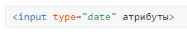

Календарь
Выбор даты применяется на сайтах, торгующих авиа и железнодорожными билетами, ведь посетителя интересует заказ билета на определённый день. Календари также применяются в блогах, где записи систематизируются по дате, и сайтах, связанных с разными событиями, например, спортивными. Так или иначе, календарь востребован и может быть добавлен следующим образом.

На сервер данные передаются в формате ГГГГ-ММ-ДД, например, 1998-08-17, а вид календаря может различаться в зависимости от браузера. Полностью поддерживает календарь только Opera и Chrome (рис. 1).
В примере 1 показано создание календаря для выбора произвольной даты.
Пример 1. Календарь
Допустимо ограничить ввод даты заданным значением через атрибуты min и max, они соответственно указывают нижнюю и верхнюю дату. Так, если вам требуется сузить диапазон ввода до ±3 дней от даты 01.06.2017, то код запишется, как в примере 2.
Текущая дата, заданная через атрибут value, подсвечивается фоном, неактивные дни, которые нельзя выбрать — серым цветом.
Пример 2. Ограничение даты
Кроме традиционного календаря, в котором можно выбрать дату, месяц и год, существует и календарь только для ввода месяца и недели. Они записываются в таком виде.
Выбор месяца происходит через аналогичный виджет, но в этом случае нельзя указать конкретную дату (рис. 3).
На сервер данные поля type="month" пересылаются как ГГГГ-ММ, например, 2017-10.
Похожим образом выглядит и виджет для выбора недели (рис. 4), где дополнительно выводится номер недели и выбрать можно только его. На сервер при этом значение отправляется как 2017-W38, где вначале указывается год, затем через дефис W и после него номер недели от начала года.
В примере 3 показано создание поля для ввода месяца.
Пример 3. Выбор месяца